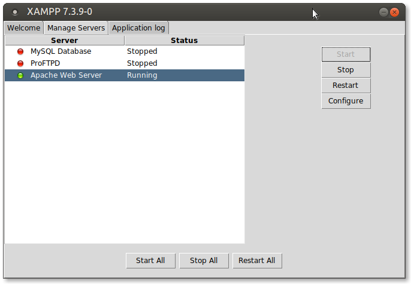

4. Preparant l'entorn de desenvolupament
Per a poder provar els nostres llocs web necessitarem instal·lar una sèrie d'eines com són: el servidor web Apache, el mòdul PHP per a aquest servidor, el SGBD MySql, un front-end per al SGBD (PHPMyAdmin), etc.
Per simplificar les coses optarem per instal·lar-ho mitjançant XAMPP, un paquet de programari lliure que conté el servidor HTTP Apache, la base de dades de MySQL i eines necessàries per utilitzar el PHP i el llenguatge de programació Perl.
Pràctica 1: Instal·lació de XAMPP
- Descarreguem el paquet XAMPP per a la nostra màquina (https://www.apachefriends.org/).
- Li donem permisos d'execució a l'arxiu descarregat:
sudo chmod +x xampp-linux-x64-7.3.9-0-installer.run - Executem l'assistent d'instal·lació
sudo ./xampp-linux-x64-7.3.9-0-installer.run - En l'assistent d'instal·lació, deixarem les opcions per defecte (excepte la qual ens parla de bitnami que la desmarcarem).
- Una vegada finalitzada la instal·lació, el nostre XAMPP es trobarà
en el directori
/opt/lampp - Ara ja podem arrancar els serveis amb el següent comando:
sudo /opt/lampp/lampp start - Quan els arranquem, si obrim el navegador i ens anem a la url http://localhost, ens hauria d'aparèixer la pàgina de benvinguda de XAMPP.
- Per a parar els serveis podem fer açò:
sudo /opt/lampp/xampp stop - En qualsevol cas, és molt més còmode treballar amb el panell de
control de XAMPP que podrem executar amb la següent ordre:
sudo /opt/lampp/manager-linux-x64.run - Veurem que s'inicia l'aplicació que ens permet controlar els serveis de XAMPP.
